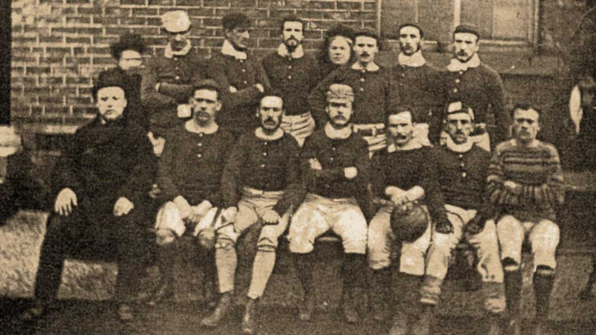
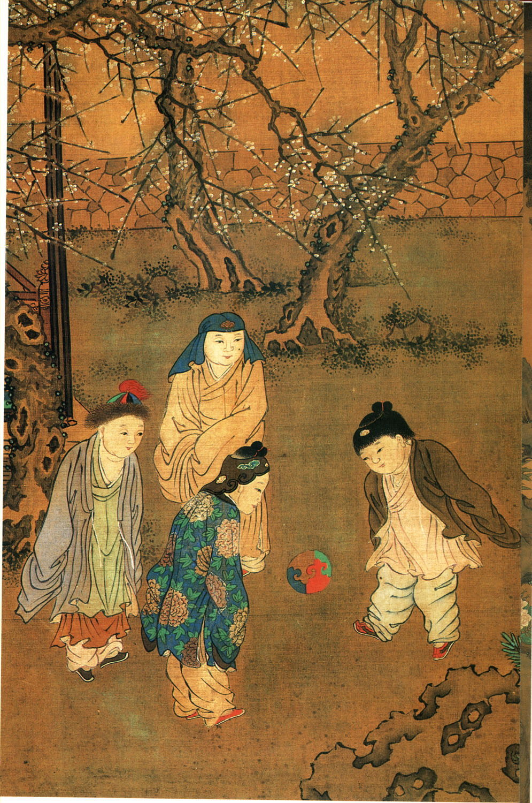

Soccer (widely known as football in many countries; will be referred to as such for the rest of this weblog) has been around for quite some time. Since 1863, to be exact. Originating in London, the game was always played with two teams of eleven using a single ball.

Above is Sheffield FC, the first football club.
The basic rules are pretty simple, for the player at least:
There are four main positions in football. The goalkeeper is the only player allowed to handle the ball with their hands/arms, though only in the penalty box; they're the last line of defense against a striker, defending the goal. Forwards, also known as strikers, are players meant to advance the ball to the other team's goal for a chance to kick the ball in, an action known as shooting in the sport. Midfielders play in the middle of the field, as their name suggests, and try to take possession from the other team and get the ball up to the strikers. Defenders play closer to the goal, on their own side, helping to keep the strikers from scoring.

Cristiano Ronaldo (pictured above) performing the shooting motion.
For a deeper dive on the rules of football, below is a link to the Laws of the Game as of 2026, which contains the ruleset that has been followed since its inception along with some newer additions.
Laws of the Game
A regulation football pitch from above.
Football has had many historic precursors, but one notable precursor will be outlined below along with a few others.
This ancient game, standardised in the Han dynasty (206 BCE - 220 CE), is a mixture of modern football, basketball, and volleyball. Players would pass a ball around without it touching the ground, attempting to get it up to a chosen player who would kick the ball into a circular goal placed on top of ten or eleven meter poles, called a fengliu yan.

An ancient depiction of children kicking a ball in a similar manner to football.
The Greek, Japanese, and even Koreans also had variations of football. The Greek had a game called episykros, but it was played with hands and violence, reminiscent of wrestling. The Japanese had a game called kemari, based off of cuju. It originated in Japan's Asuka period, after the year 600, and was played using a ball made of animal hide called a mari. This game was more ceremonial than competitive. In Korea, also based off of cuju, there was a game called chuk guk. Even early North Americans had a type of football, called pasuckuakohowog, which was said to be almost exactly the same as folk (mob) football played in Europe.
While football was originally played with men, women also wanted in on the fun. The first women's football match in Scotland, documented by the Scottish Football Association, took place in Glasgow in 1892. The year of 1895 saw a documented match in England as well. The best-recorded European women's team of the era was the British Ladies' Football Club, founded by an activist named Nettie Honeyball in 1894. Women's football was highly frowned upon in England, though, possibly because the British football associations were afraid that women's football threatened the masculinity of the game. However, the games continued without the support of the associations. In the First World War, women's football began to expand due to the increase in industrial employment of women. Though mostly synonymous with charity matches, this was a big step for women in the game. Governing bodies in the sport, however, cut women off from playing the game on associan pitches and even suggested -- no, insisted -- that the game was not for females and shouldn't be supported. The persisted though and later on, in the late 1900's, the game was revived. In 1969, the Women's Football Association was formed in England. The UEFA also voted to officially recognized women's football in 1971, which led to the first Asian Women's Championship in 1975 and eventually the FIFA Women's World Cup in 1991.

The USA's Women's World Cup team in 1991 after winning.
Football is a pretty popular sport, but exactly how popular is it? Let's find out with Google Analytics (from 2004 to now, at least), using the term soccer to avoid confusion with American football.
| Month, Year | Relative Popularity (1-100) |
|---|---|
| Jun 2004 | 48 |
| Jun 2006 | 87 |
| Jun 2008 | 49 |
| Jun 2010 | 86 |
| Jun 2012 | 61 |
| Jun 2014 | 91 |
| Jun 2016 | 80 |
| Jun 2018 | 92 |
| Jun 2020 | 32 |
| Jun 2022 | 47 |
Football usually spikes in popularity around June during World Cup years, and recede on off years. In 2022, the World Cup landed in November and December, which caused it to rise to 99 on the relative popularity scale. This makes a good amount of sense because the World Cup was very much trending on social media, even having a song made on it by influential streamer/content creator IShowSpeed. The World Cup was being played in classes and schools, which I know from personal experience.

Argentina's national team after winning the 2022 World Cup.
Here is the whole graph, if you'd like to see it (credit: Google Trends):
Thank you for reading this weblog. I hope you've learned something interesting about the sport of football. Perhaps you could try playing cuju with your friends or telling your friends some interesting factoids the next time you play some street football or pass a ball around. This sport has more enjoyment in it (learning) than just the physical activity and exercise.

hehe funneh gif of ronaldo
the dead look in his eyes 🔥🔥🔥